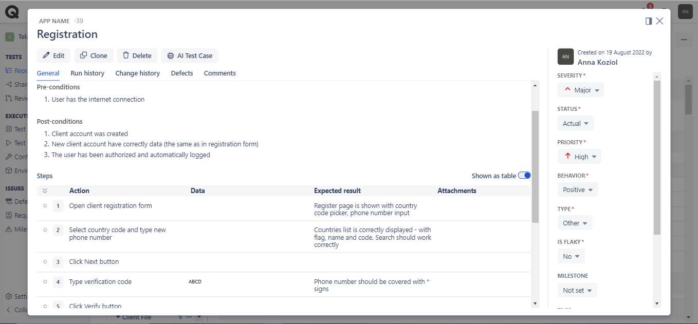
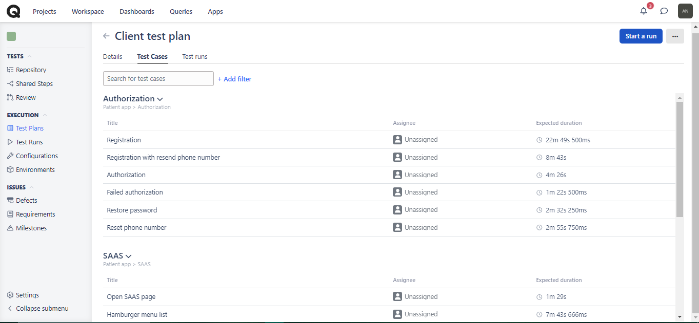
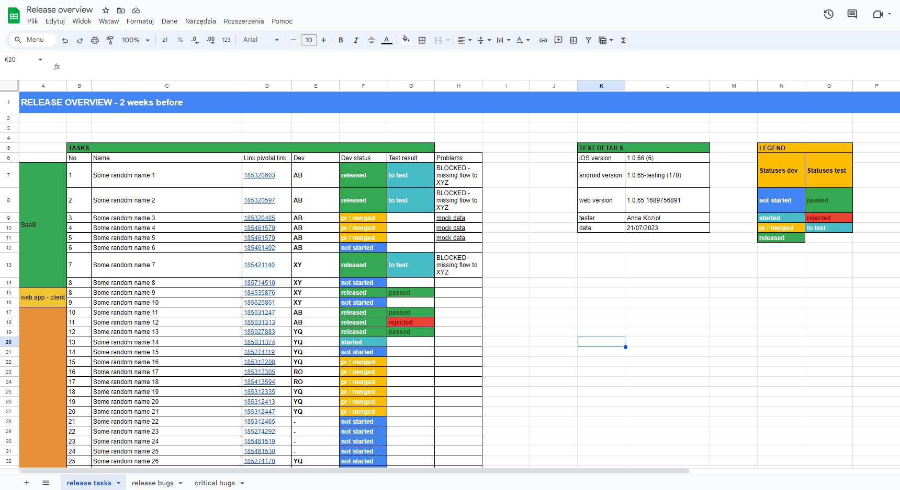
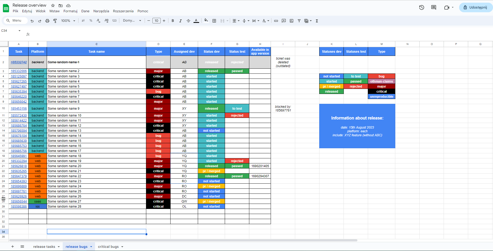
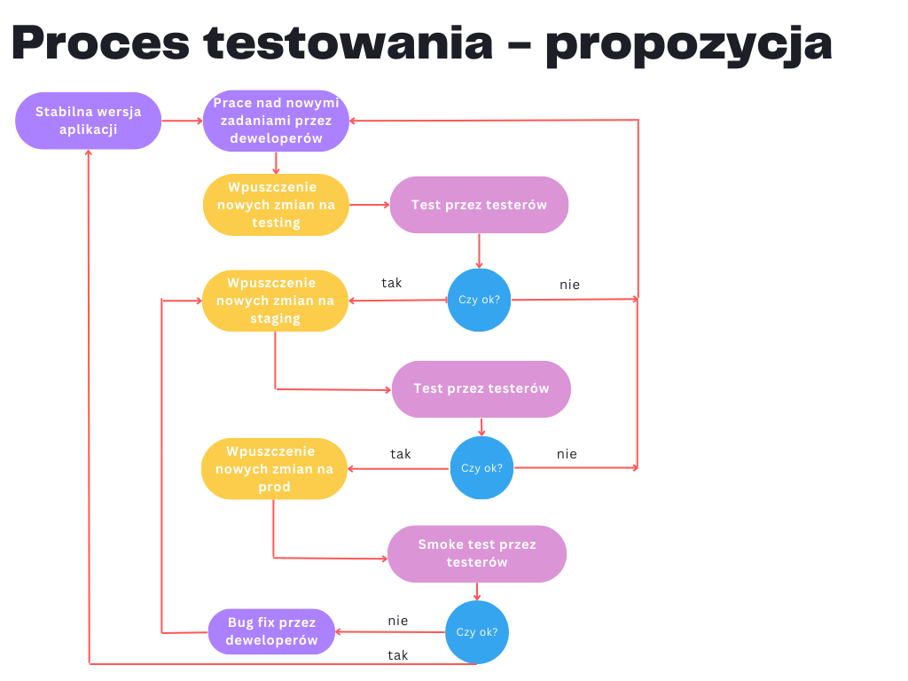

O mnie
O mnie
Jestem testerem oprogramowania, z doświadczeniem w testowaniu manualnym aplikacji webowych i mobilnych, poszukujący pracy w organizacji zorientowanej na jakość. Poszukuję możliwości poszerzenia wiedzy, w tym w zakresie testów automatycznych.

Umiejętności
Posiadam następujące umiejętności
- Znajomość zagadnień ISTQB
- Manualne testowanie aplikacji webowych i mobilnych
- Raportowanie defektów
- Tworzenie przypadków testowych, planów testów, raportów z testów
- Tworzenie prostych stron internetowych one-page
- Analityczne myślenie
- Sumienność, pracowitość, dokładność
- Kwalifikacje zawodowe: E12, E13, E14 - tytuł technika informatyka

Narzędzia & Technologie
Mam doświadczenie z pracą z następującymi narzędziami i techonologiami
Projekty
Zapraszam do zapoznania się z przykładowymi zrealizowanmi przeze mnie procesami związanymi z testowaniem oprogramowania
Specyfikacja wymagań
- skrócona wersja --
System powinien być podzielony na dwa segmenty:
- Backend – skrypty umożliwiające działanie aplikacji które umieszczone są na serwerze, a do których nie mają dostępu bezpośredniego użytkownicy systemu
- Frontend – wizualny segment działający po stronie użytkownika i zarządzający systemem
-
Muszą być wyróżnione role dla użytkowników systemów:
- Super administrator – możliwość dodawania firmy, zarządzania użytkownikami i zasobami AR
- Administrator - możliwość dodawania grup otwartych i zamkniętych, przypisywanie moderatorów i administratorów, tworzenie kampanii, dashbordów z wiadomościami
- Moderator - możliwość zarządzania grupą, dodawanie i usuwanie uczestników, tworzenie questów
- Zwykły użytkownik – możliwość edycji swojego profilu
Zwykły użytkownik:
UC1: Jako zwykły użytkownik chcę edytować informacje o swoim profilu (zdjęcie profilowe, imię, nazwisko, data urodzenia, mail), dzięki czemu informacje o moim koncie będą wyświetlane jako aktualne.
UC2: Jako zwykły użytkownik chcę zmienić swoje hasło, dzięki czemu możliwe będzie logowanie poprzez nowe hasło.
Moderator:
UC3: Jako moderator chcę mieć wszystkie funkcjonalności zwykłego użytkownika, dzięki czemu będę mógł edytować dane swojego konta.
UC4: Jako moderator chcę widzieć globalny ranking graczy grupy, dzięki czemu będzie możliwe wyłonienie najlepszego z nich.
👉 Link do pełnej wersji 👈Test plan
- skrócona wersja przykładowego planu -Ten dokument ma na celu opisanie ogólnego procesu testowania aplikacji webowej ABC, strategii tegoż procesu wraz z określeniem jego zakresu. Zostanie opracowany również harmonogram.
OczekiwaniaProces testowania powinien udowodnić, że dostarczone oprogramowanie spełnia wszelkie wymagania funkcjonalne i niefunkcjonalne (określone w Specyfikacji wymagań). Zauważone defekty powinny zostać poprawione przez zespół deweloperki i ponownie przetestowane z akceptacją przed wypuszczeniem kolejnej wersji aplikacji.
Zakres testów- W procesie testowania aplikacji webowej ABC zostaną zaimplementowane testy jednostkowe wszystkich kluczowych modułów. Zostaną one zaimplementowane przez zespół deweloperski. Poszczególne metody powinny być przetestowane w sposób odseparowany do reszty systemu.
- Testy integracyjne nie są planowane, gdyż w obecnym stanie aplikacja działa poprawnie i nie jest konieczne sprawdzanie integracji pomiędzy modułami.
- Przeprowadzone zostaną testy funkcjonalne, aby zweryfikować dostarczone oprogramowanie i jego kluczowe funkcje ze spisanymi historyjkami użytkownika
- Nie zostaną wykonane testy wydajnościowe w celu walidacji czy system jest odporny na większy ruch użytkowników, gdyż dla najbliższego czasu nie oczekuje się wzrostu liczebności odbiorców projektu. Dla obecnej liczby użytkowników system działa poprawnie.
- Testy bezpieczeństwa nie będą wykonywane ze względu na brak odpowiednich zasobów personalnych i budżetowych.
- Wykonane zostaną testy regresyjne po zaimplementowanie każdej nowej funkcjonalności, aby zbadać stabilność aplikacji.
- 7. Przed planowaną aktualizacją wersji produkcyjnej, zostaną wykonane testy akceptacyjne w celu upewnienia się, że aktualizacja niesie ze sobą przyrost jakości projektu.
- 8. Główne funkcjonalności aplikacje zostaną zbadane ze pomocą testów automatycznych.
-
Testy jednostkowe
- Stopień pokrycia testów jednostkowych dla projektu powinien wynosić minimum 70%
-
Testy funkcjonalne
- Wszystkie zbadane funkcjonalności powinny zostać zaakceptowane przez zespół testerów
- We wszystkich zbadanych testach rezultat testów odpowiada oczekiwanym wynikom
-
Testy regresyjne
- Wszystkie funkcjonalności opisane w historyjkach użytkownika zostały przetestowane
- Nie zauważono żadnych nowych błędów podczas przeprowadzenia testów regresyjnych
- Opisane funkcjonalności w historyjkach użytkownika odznaczają się taką samą jakością lub większą jak w obecnej wersji produkcyjnej
-
Testy akceptacyjne
- Nie powinno być otwartych żadnych krytycznych błędów (tj. o priorytecie 3 bądź 4)
-
Testy automatyczne
- Testy automatyczne powinny weryfikować wszystkie funkcjonalności aplikacji
- Proces testowania aplikacji webowej ABC będzie skupiał się na weryfikacji poprawności działania opisanych historyjek użytkownika
- Proces testowania powinien spełniać wszystkie zapisy określone w tym dokumencie, jednak powinien również być na tyle elastyczny, aby można było w nim dokonywać zmian, o ile zaistnieje taka potrzeba
- Środowisko testowe w jak największym stopniu powinno odzwierciedlać środowisko produkcyjne i panujące w nim zasady
- Proces testowania powinien być działaniem mierzalnym i powtarzalnym
- Proces testowania będzie uwzględniał określone kryteria wejścia i wyjścia
Przypadki testowe
- skrócona wersja -Przypadki testowe podczas mojej pracy zawodowej realizowałam albo w aplikacji Qase albo jako lista kroków w formie tabeli w arkuszu kalkulacyjnym.

Scenariusze testowe
- skrócona wersja -Scenariusze testowe wykonywałam na 2 sposoby: albo w aplikacji Qase wybierając z dodanych przypadków testowych ich podzbiór lub w arkuszu kalkulacyjnym - poprzez tabelę z przypadkami testowymi posegregowanymi pod daną funkcjonalność (jak autoryzacja, ścieżka zakupu w aplikacji, użytkowanie chatu).
Raporty z testów
Raporty z testów, które wykonywałam w momentach freeze oraz kilka dni przed planowanym release, były zależne od projektu, w którym uczestniczyłam. Ich szablon wyglądał następująco: lista zadań zaplanowanych na ten sprint z wynikiem testów oraz zbiorem defektów. Oprócz tego raport zawierał listę defeketów z największym priorytetem, które dotyczą ogółu aplikacji. W sekcji informacyjnej raport zawierał inforrmacje o wersji aplikacji, wersji systemu i urządzeniach / przeglądarkach, listę testerów wraz z datą. Raport był realizowany manualnie w arkuszu kalkulacyjnym w formie tabel umieszczonym w chmurze. Przesyłałam również raport automatycznie wygenerowany z apliakcji Qase po wykonaanym scenariuszu testowym.
 Opisy błędów
- szablon -Podczas zgłaszania zauważonych defektów stosowałam do tej pory szablon:
- Warunki wstępne - dane logowania
- Kroki reprodukcji w formie listy
- Kopia błędu z konsoli devtools (jeśli wystąpił)
- Nazwa requestu, status odpowiedzi, payload i response (jeśli wystąpił)
- Screen lub video z krokami reprodukcji
- Dane techniczne: typ środowiska, wersja aplikacji, wersja przeglądarki bądź wersja systemu operacyjnego urządzenia mobilnego
Proces testowania
- skrócona wersja -Forma dokumentacji (notatki) stworzona przeze mnie dla całego zespołu projektowego - w szczególności dla nowych członków zespołu testerskiego. Omawiająca środowiska w których działa aplikacja pod kątem pracy testerów, plan wdrożenia usystematyzowanego procesu developmentu na poszczególne środowiska z uwzględnieniem procesu testowania, proces testowania nowych funkcjonalności oraz proces zgłaszania defektów.
Cypress
- własny projekt -Wykonałam testy E2E platformy olx.pl zawierające kilka skryptów dotycząych: wyświetlanie podstawowych sekcji i elementów na stronie głównej oraz wyszukiwanie rzeczy. Użyłam w tym celu frameworku Cypress 12 oraz TypeScript.
👉 Link do pełnej wersji 👈Strony internetowe
Zapraszam do zobaczenia moich dotychczasowych prostych stron internetowych realizowanych w ramach freelancer.